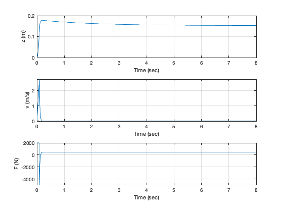
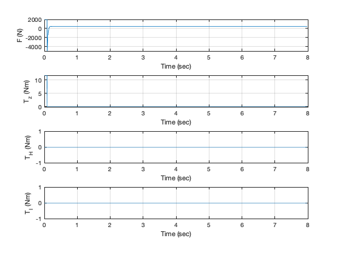
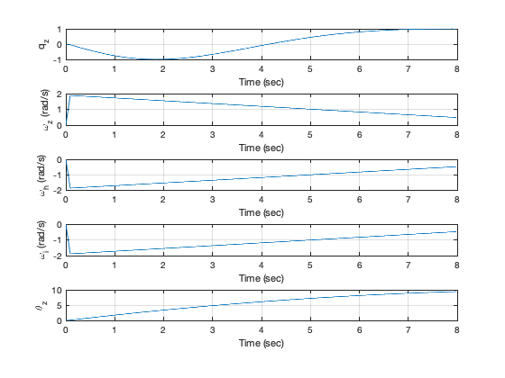

Script to simulate a dancer
See also RHSDancer, RungeKutta, PlotSet
Contents
Set up the simulation
d = RHSDancer; n = 800; dT = 0.01; xP = zeros(16,n); x = zeros(12,1); x(3) = 1; g = 9.806; dancer = 'Robot_1'; % Control system for 2 pirouettes in 6 seconds tPirouette = 6; zPointe = 6*0.0254; tPointe = 0.1; kP = tPointe/dT; omega = 4*pi/tPirouette; torquePulse = d.inertia(3,3)*omega/tPointe; tFriction = 0.1; a = 2*zPointe/tPointe^2 + g; kForce = 1000; tau = 0.5; thetaStop = 4*pi - pi/4; kTorque = 200; state = zeros(10,n);
Simulate
for k = 1:n d.torqueH = 0; d.torqueI = 0; % Get the data for use in the neural netwoork xDot = RHSDancer(0,x,d); state(:,k) = [x(7:9);0;0;xDot(2);x(3:6)]; % Control if( k < kP ) d.force = d.mass*a; d.torque = [0;0;torquePulse]; else d.force = kForce*(zPointe-x(1) -x(2)/tau)+ d.mass*g; d.torque = [0;0;-tFriction]; end if( x(12) > thetaStop ) d.torqueI = kTorque*x(9); end xP(:,k) = [x;d.force;d.torque(3);d.torqueH;d.torqueI]; x = RungeKutta(@RHSDancer,0,x,dT,d); end
Plotting
time = (0:n-1)*dT;
yL = { 'z (m)' 'v (m/s)' 'q_s' 'q_x' 'q_y' 'q_z' ...
'\omega_x (rad/s)' '\omega_y (rad/s)' '\omega_z (rad/s)' ...
'\omega_h (rad/s)' '\omega_i (rad/s)' '\theta_z' 'F (N)',...
'T_z (Nm)' 'T_H (Nm)' 'T_I (Nm)'};
k = [1 2 13];
PlotSet(time,xP(k,:),'x label', 'Time (sec)','y label',yL(k),...
'figure title','Dancer Translation');
k = 13:16;
PlotSet(time,xP(k,:),'x label', 'Time (sec)','y label',yL(k),...
'figure title','Forces and Torque');
k = [6 9 10 11 12];
PlotSet(time,xP(k,:),'x label', 'Time (sec)','y label',yL(k),...
'figure title','Rotation');
% Save the data
cd TestData/
save(dancer,'state','time');
cd ..
   Copyright
Copyright (c) 2019, 2022 Princeton Satellite Systems, Inc. All rights reserved.